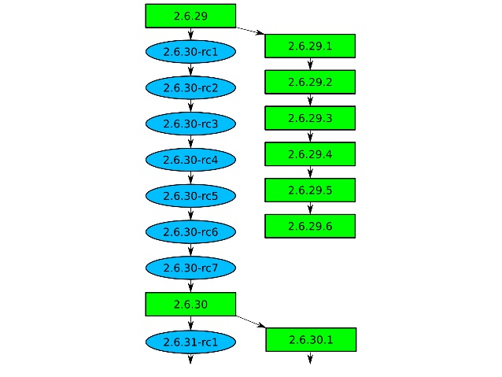
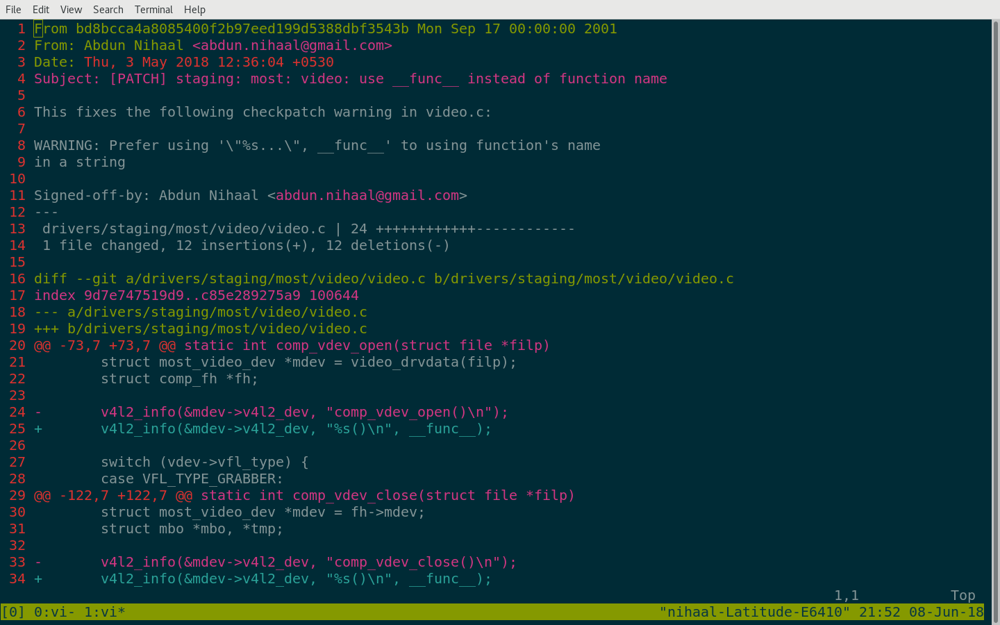

Make your first linux kernel patch
Linux kernel
- One of the largest free software projects
- Powers credit-card sized computers to supercomputers
- Developers from all over the world collaborate
How is it developed?
- Developers send code changes by mail
- Divided into subsystems
- Every subsystems has maintainers
Kernel development cycle
Released every 2-3 months
Images source: Greg KH
What is a patch?
Checkpatch errors
- Coding style errors
- Found using checkpatch.pl
- Entry point for new contributors
ERROR: that open brace { should be on the previous line
if ((RALINK_PCI0_STATUS & 0x1) == 0)
{
printk("PCIE0 no card, disable it(RST&CLK)\n");
ASSERT_SYSRST_PCIE(RALINK_PCIE0_RST);
//...
}
if ((RALINK_PCI0_STATUS & 0x1) == 0){
printk("PCIE0 no card, disable it(RST&CLK)\n");
ASSERT_SYSRST_PCIE(RALINK_PCIE0_RST);
//...
}
ERROR: space required before the open parenthesis '('
if(reg <= 5 && reg >= 3) {
//..
}
if (reg <= 5 && reg >= 3) {
//..
}
Staging directory
- drivers/staging
- Nursery for drivers
- Contains drivers under development
- Recommended for new contributors
Enough talk. Let's start
1. Set up tools
- Configure your editor
- Set up Git
- Install an email client
Read Documenetation/process/email-clients.rst - Install and set up git send-email
- Check out Kernelnewbies.org/FirstKernelPatch for instructions
2. Get the source code
Mainline kernel tree
git clone https://git.kernel.org/pub/scm/linux/kernel/git/torvalds/linux.git
Staging tree
git clone git://git.kernel.org/pub/scm/linux/kernel/git/gregkh/staging.git
3. Compile the kernel
make oldconfig
make -j2
4. Pull from staging-next and Create a branch
git branch -a
git branch staging-next
git checkout staging-next
git pull origin staging-next
git checkout -b new staging-next
5. Use checkpatch to find bugs and fix them
./scripts/checkpatch.pl -f drivers/staging/some_driver/some_file.c
6. Commit the changes
git diff
git add drivers/staging/some_driver/some_file.c
git commit -s -v
git log --oneline
7. Generate the patch
git format-patch staging-next..new
8. Check for errors
- Build the driver
make M=drivers/staging/driver_name - Use checkpatch
./scripts/checkpatch.pl your_patch.patch - Test on real hardware (if possible)
9. Find whom to send to
./scripts/get_maintainer.pl drivers/staging/some_driver/some_file.c
10. Send patch
git send-email --to someone@something.com --cc somelist@something.com your_patch.patch
Celebrate
So, I made my first patch. Now what?
- Do a patchset
- Eudyptula challenge
- Linux kernel camp
- Google Summer of Code, Outreachy, ..
So, I made my first patch. Now what? (contd.)
- Checkout TODO files
- Find bugs using other static checking tools (Sparse, Coccinelle, Smatch)
- Find unsupported hardware and write a driver for it